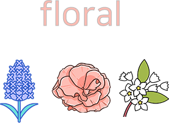
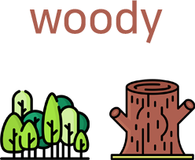

레몬,베르가못,오렌지,라임 등과 같은 감귤류의 향기를 말합니다.
신선하고 상큼하면서 동시에 달콤한 향을 가지고 있습니다.
풀이나 나뭇잎을 베어내거나 비볐을때의 향기를 말합니다.
신선하고 깔끔한 향기를 가지고 있습니다.
페퍼민트, 라벤더, 로즈플라워 등과 같은 허브 향기를 말합니다.
은은하면서 깔끔한 허브향을 가지고잇습니다.
장미,자스민,프리지아,라일락 등과 같은 꽃의 향기를 말합니다.
세련되고 여성적이면서 활동적인 향을 가지고 있습니다.
비누,세제, 화장품에서 맡을 수 있는 인공적인 향기를 말합니다.
가볍고 부드러우며 포근한 향을 가지고 있습니다.
바닐라의 달콤하고 부드러운 향기를 말합니다.
따듯하고 부드럽고 달콤한 향기를 가지고 있습니다.
나무가 주는 냄새, 나무의 이미지가 생각나는향기입니다.
중후하면서 부드럽고 따듯한 향기를 가지고 있습니다.